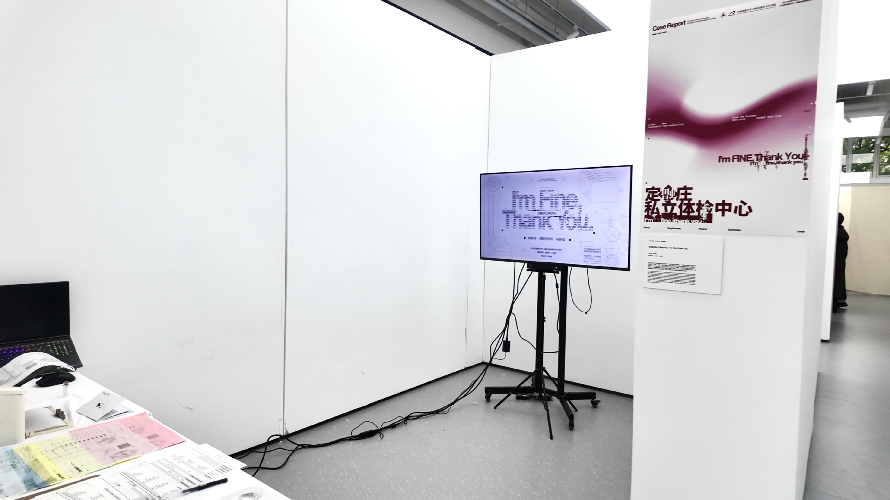
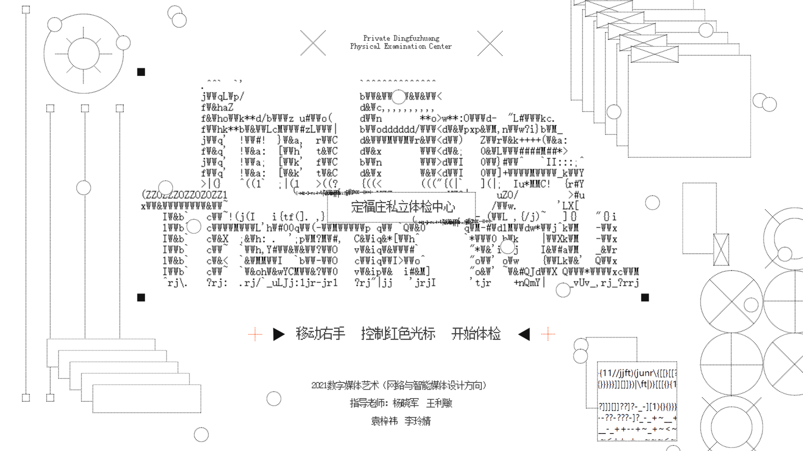
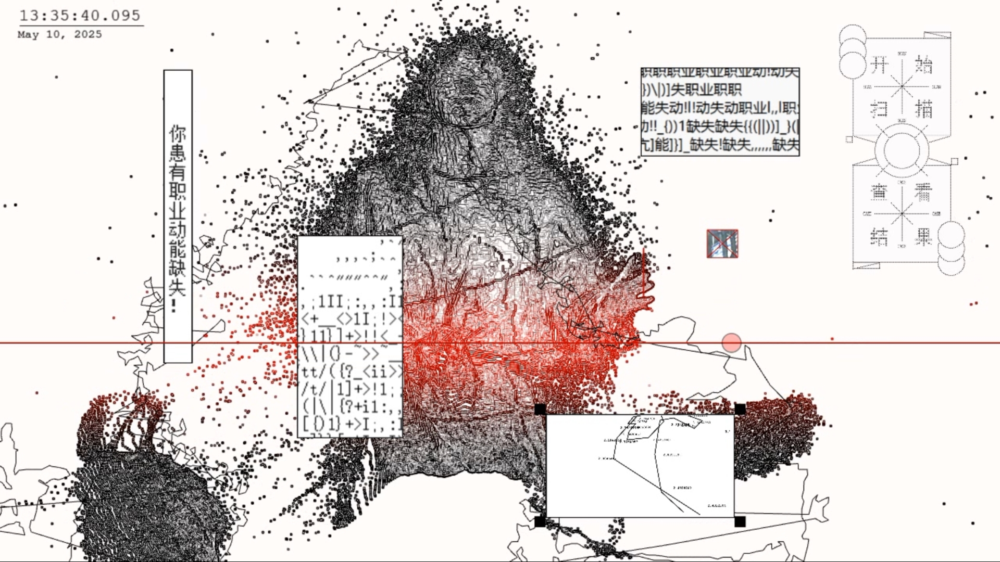
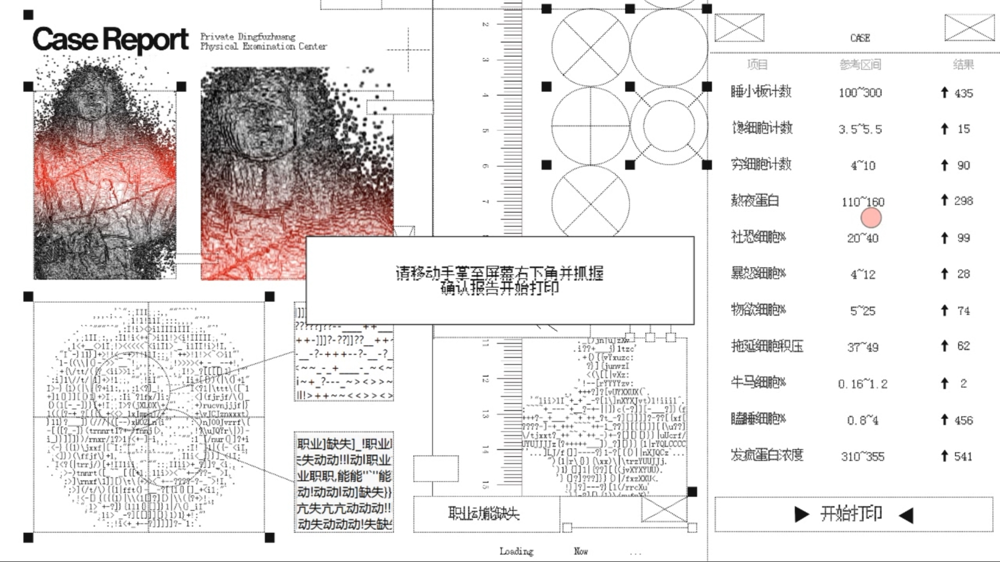
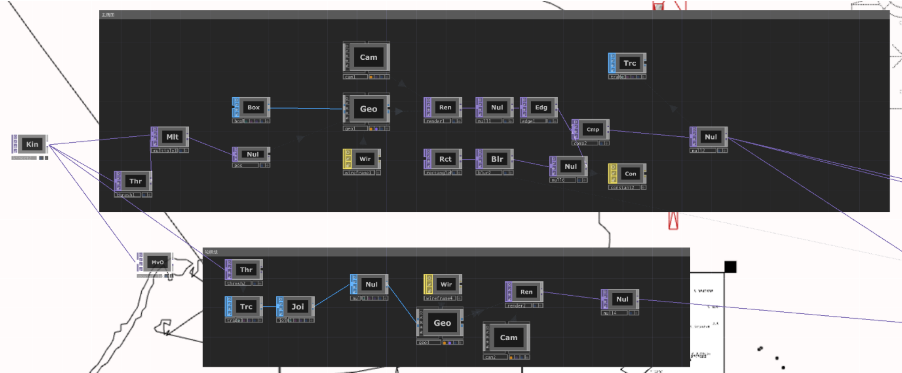
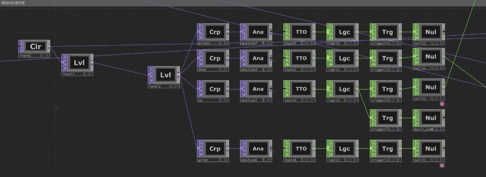
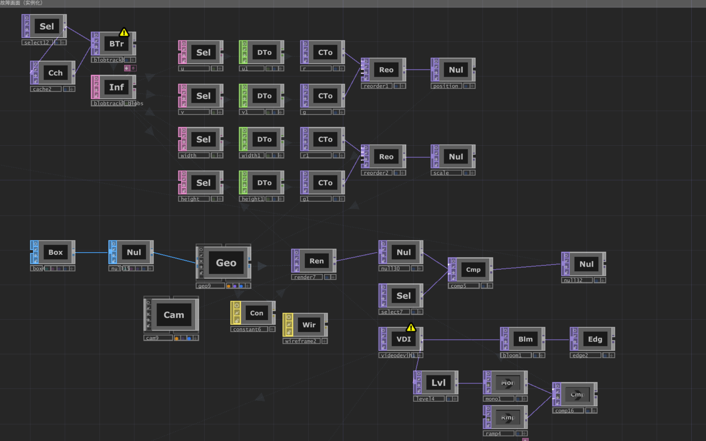
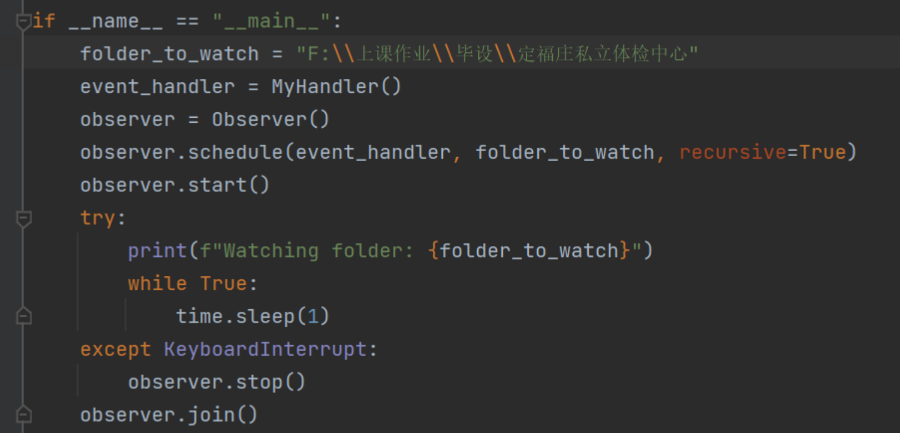

Through simulating the interactive workflow of clinical physical examinations, Dingfuzhuang Private Medical Examination Center explores the intervention and reshaping of human emotions by technical logic. The project utilizes real-time interactive programming and data visualization to transform contemporary psychological phenomena such as "Fa Feng Wen Xue" (Crazy Literature) into sensory experiences. Under systematic interactive guidance, the audience undergoes a process from being observed and defined to a final emotional breakthrough. The installation not only creates a cold sense of order through TouchDesigner and real-time generative visuals, but also uses this virtual "diagnosis" to conduct a deep physical examination of the mental anxiety and self-identity of modern urbanites.



The system diagnoses participants with fictional, satirically clinical conditions such as "Occupational Kinetic Deficiency," reflecting the alienation of the individual within modern social structures.

Subsequently, the page redirects to the physical examination report, presenting non-existent diagnostic indicators such as Somnoplatelets(SLP), Socio-pathic Cells(SPC), and Psychotic Protein(PPR).
// PROCESS

The main visual uses Kinect to capture color point cloud coordinates, utilizing instancing to map wireframe box geometries to each point. For the background, a Threshold TOP adjusts the captured portrait's threshold, which is then converted into geometry via a Trace CHOP and rendered with wireframe materials to create real-time line effects.

The system uses a Circle TOP bound to hand coordinates as an interactive cursor. The trigger zone is defined by a Crop TOP and an Analyze TOP (Maximum Pixel mode); when the cursor enters this zone, a TopToCHOP converts the pixel presence into a value of 1, which is then processed by Logic and Trigger CHOPs to control trigger intervals and duration.
The interaction toggle is implemented by mapping Kinect grip data to the cursor's Level TOP opacity: when the hand is open, the opacity drops to 0, making the cursor invisible to the Analyze TOP and silencing the output signal; otherwise, the trigger remains functional.

Regarding the visual effects of image tracking, the core logic uses a Blob Track TOP to analyze the differences between the current frame and the previous frame to extract variance data. These values are then visualized through instancing, where they are either assigned wireframe materials or mapped to display the live video feed.

Python scripts are primarily used to bridge the connection between TouchDesigner and the printer for real-time printing. In TouchDesigner, a Movie File Out TOP generates and saves images into a local folder. A Watchdog script monitors this directory; whenever a new image file is detected, it automatically commands the printer to execute a print job.